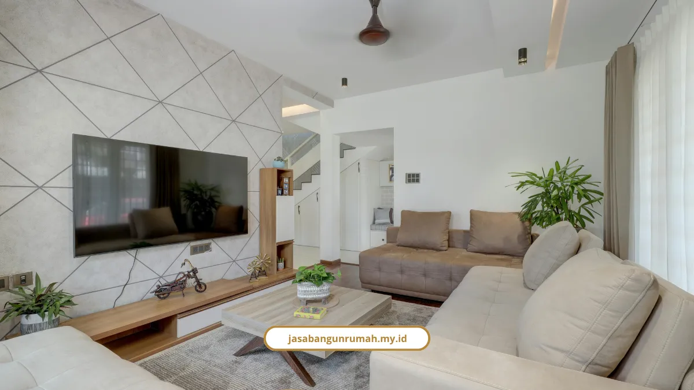

Daftar Isi
- Mengapa Pilih Layanan Design & Build Kami di Semarang?
- Apa Saja Contoh Proyek yang Sudah Kami Selesaikan di Semarang?
- Bagaimana Kami Menyesuaikan Desain dengan Iklim Panas dan Lembap Semarang?
- Berapa Kisaran Biaya untuk Proyek Serupa di Portofolio Ini?
- Apa Kata Klien Tentang Hasil Kerja Kami?
- Bagaimana Alur Kerja dari Konsultasi Sampai Serah Terima Kunci?
- Apakah Portofolio Ini Bisa Dilihat Langsung Bentuk Fisiknya?
- FAQ
Omongan soal kualitas gampang, tapi bukti fisik yang bisa dilihat langsung itu beda cerita. Portofolio bangun rumah Semarang kami ini saya susun supaya Anda nggak cuma percaya klaim, tapi lihat sendiri hasil kerjaan yang sudah beres.
Iklim Semarang yang panas dan lembap, plus risiko overbudget yang sering dikhawatirkan calon klien, jadi dua hal yang selalu kami pertimbangkan di setiap proyek.
Mengapa Pilih Layanan Design & Build Kami di Semarang?
Rekam jejak kami bukan klaim kosong. Studio ini berdiri sejak 2010, berawal dari biro gambar arsitektur kecil, sekarang jadi studio design & build terpercaya.
- Pengalaman lebih dari 15 tahun di dunia konstruksi.
- Lebih dari 250 proyek selesai di berbagai kota, termasuk Semarang.
- Tingkat kepuasan klien mencapai 98 persen.
- Didukung 40+ tim profesional, termasuk arsitek dan insinyur sipil bersertifikat.
Setiap proyek kami dibekali RAB transparan, garansi struktur setelah serah terima kunci, dan laporan progres berkala berupa foto serta laporan tertulis. Jadi Anda nggak perlu was-was proyek jalan diam-diam tanpa kabar.
Apa Saja Contoh Proyek yang Sudah Kami Selesaikan di Semarang?
Portofolio kami cukup beragam, mulai dari rumah tinggal sampai bangunan komersial. Beberapa kategori proyek yang sudah kami rampungkan:
- Rumah tinggal: kediaman minimalis dua lantai, hunian tropis modern satu lantai, hunian keluarga tiga kamar tidur.
- Bangunan komersial: ruko investasi tiga lantai, gedung kantor empat lantai.
- Renovasi dan interior: renovasi fasad rumah klasik, alih fungsi gedung tua jadi ruang usaha, ruang tamu kontemporer, kamar tidur utama bernuansa hangat.
Tipe proyek yang paling diminati di Semarang saat ini adalah hunian minimalis 2 lantai di area perumahan seperti Candi Golf, Manyaran, dan Tlogo Timun Mas, serta rumah kost 2 lantai di kawasan Semarang Selatan dan Tembalang yang dekat kampus.
Bagaimana Kami Menyesuaikan Desain dengan Iklim Panas dan Lembap Semarang?

Iklim Semarang yang panas, lembap, dengan variasi kontur antara Semarang Atas dan Semarang Bawah, butuh pendekatan desain khusus, bukan asal tempel gambar rumah dari internet.
- Ventilasi silang (cross ventilation) untuk sirkulasi udara alami.
- Dinding bata ringan/hebel yang terisolasi termal supaya rumah nggak gerah.
- Teritisan atap (overhang) lebar untuk menahan tampias hujan dan panas matahari langsung.
- Penyesuaian jenis pondasi sesuai kondisi geologis lahan.
Green Building Council Indonesia (GBCI) menjelaskan bahwa penerapan prinsip desain pasif seperti ventilasi silang dan orientasi bangunan yang tepat dapat mengurangi kebutuhan pendinginan mekanis (AC) secara signifikan pada bangunan di iklim tropis.
Berapa Kisaran Biaya untuk Proyek Serupa di Portofolio Ini?
Kalau Anda tertarik dengan salah satu tipe proyek di atas, ini gambaran biayanya berdasarkan acuan 2026.
- Spesifikasi standar/sederhana: Rp3.000.000-Rp4.500.000/m².
- Spesifikasi menengah: Rp4.500.000-Rp6.500.000/m².
- Spesifikasi premium/mewah: Rp7.000.000-Rp10.000.000+/m².
- Simulasi tipe: tipe 36 sekitar Rp180 juta, tipe 45 sekitar Rp225 juta, tipe 60 sekitar Rp300 juta, tipe 70 dua lantai Rp350-420 juta.
Jangan lupa biaya perizinan PBG sekitar Rp3.000.000-Rp7.000.000, dan siapkan dana cadangan 10-15 persen dari total RAB.
Kalau Anda ingin pembahasan lebih detail soal komponen biaya per meter, saya sudah bahas lengkap di artikel Biaya Bangun Rumah Semarang yang membahas konsultasi gratis dan RAB transparan kami dari awal sampai akhir.
Baca Juga: Biaya Bangun Rumah Semarang per Meter 2026
Apa Kata Klien Tentang Hasil Kerja Kami?
Saya selalu bilang, testimoni klien jauh lebih meyakinkan daripada deskripsi layanan yang saya tulis sendiri.
"Proses pembangunan rumah kami berjalan sangat rapi. Tim selalu memberi kabar perkembangan proyek dan hasilnya jauh melebihi ekspektasi kami." - Budi Santoso, Klien Rumah Tinggal
"Kami sangat terbantu dengan RAB yang transparan sejak awal, tidak ada biaya tak terduga. Renovasi ruko kami selesai lebih cepat dari jadwal." - Siti Aminah, Pemilik Ruko
"Desain interior yang diusulkan benar-benar mencerminkan karakter keluarga kami. Sangat merekomendasikan Jasa Bangun Rumah untuk siapa pun yang ingin membangun hunian berkualitas." - Dewi Lestari, Klien Desain Interior
Bagaimana Alur Kerja dari Konsultasi Sampai Serah Terima Kunci?
Semua proyek di portofolio ini melewati alur kerja yang sama, jadi Anda tahu persis apa yang akan dilalui kalau memesan layanan kami.
- Konsultasi dan survei lahan gratis.
- Desain dan RAB transparan tanpa biaya tersembunyi.
- Konstruksi terawasi sesuai standar SNI dan K3.
- Serah terima kunci plus garansi struktur.
Apakah Portofolio Ini Bisa Dilihat Langsung Bentuk Fisiknya?
Bisa, sebagian proyek yang sudah selesai bisa dijadwalkan untuk survei langsung sesuai kesepakatan dengan pemilik rumah, terutama untuk klien yang ingin melihat kualitas finishing secara nyata sebelum memutuskan.
Silakan sampaikan kebutuhan ini saat sesi konsultasi gratis dengan tim kami.
Portofolio ini bukan sekadar galeri foto, tapi bukti bahwa RAB transparan dan garansi struktur yang kami tawarkan benar-benar terealisasi di lapangan. Dari hunian minimalis sampai ruko investasi, semuanya dikerjakan dengan alur kerja yang sama, jelas, dan terawasi.
Kalau Anda ingin proyek Anda jadi bagian dari portofolio berikutnya, silakan hubungi kami via WhatsApp/Telp 0889-8964-3555.